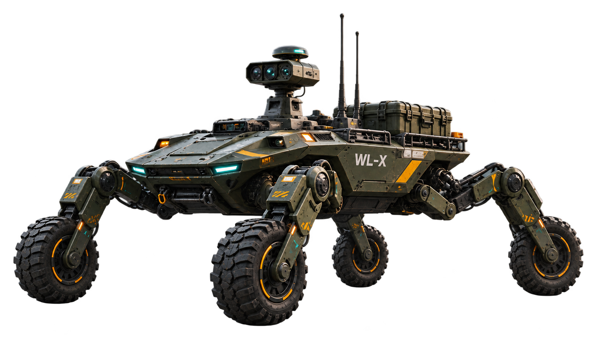
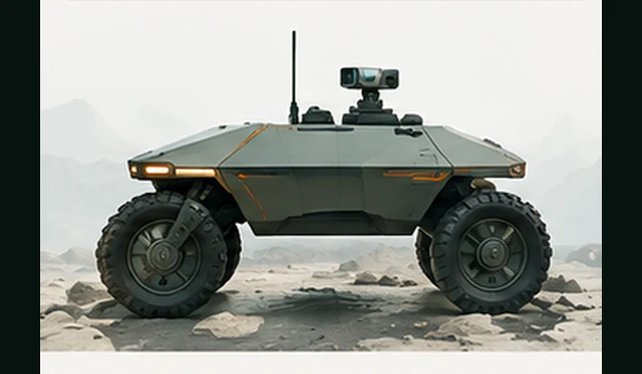
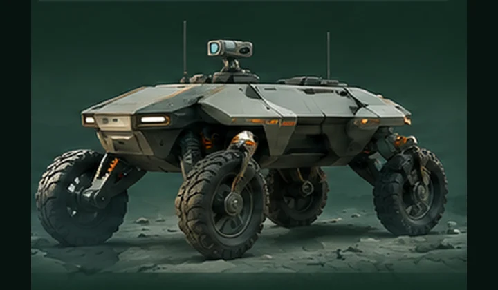
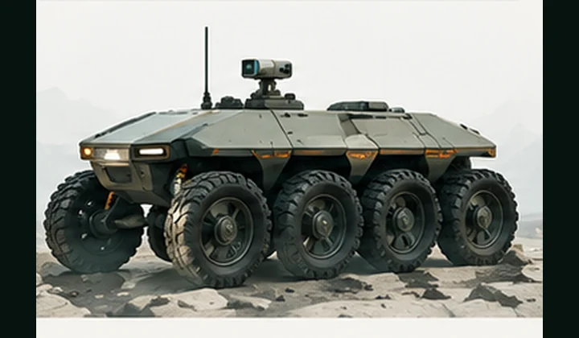
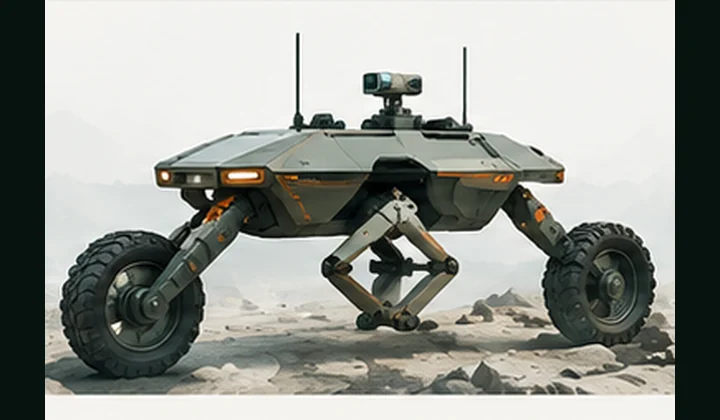
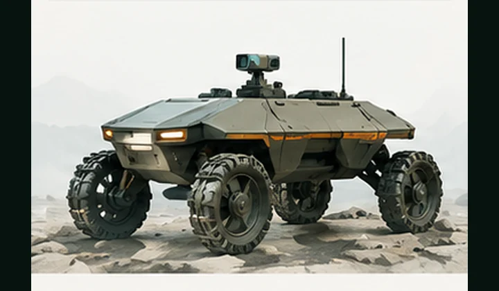
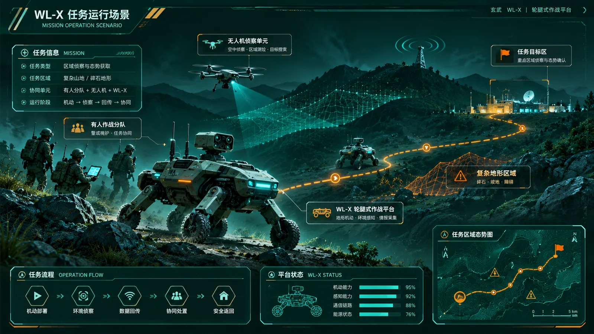
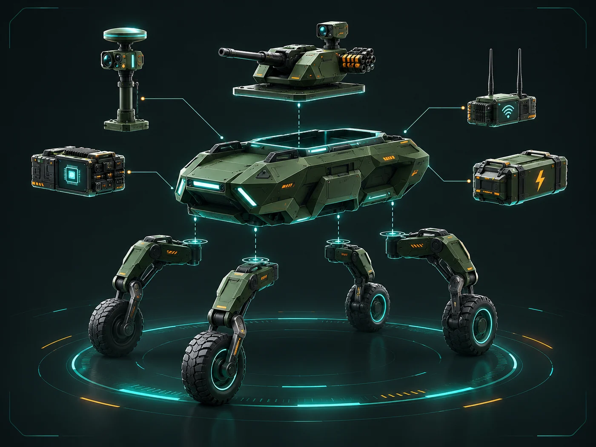

EXPLORE / 01认识系统
从任务到模块
任务 → 体系 → 整机 → 系统 → 子系统 → 模块
- 5 类轮腿构型对比
- 10 个系统 / 50 个子系统
- 203 个末端模块
轮腿式无人平台 · 系统工程知识探索网站
从平台结构、需求形成到架构与安全控制，用同一条可追溯证据链理解复杂系统如何被定义、分解与验证。

任务 → 体系 → 整机 → 系统 → 子系统 → 模块
BMA → BRS → ConOps → OpsCon → Stakeholders → StRS
系统需求规格书 → 初始系统架构 → 系统控制框图 → 安全需求与安全架构
场景分层 → 场景要素 → ODC → 典型场景 → 风险约束
WHEELED–LEGGED UNMANNED COMBAT PLATFORM
面向复杂地形前沿侦察与伴随支援的轮腿式无人平台概念方案。以四轮腿独立驱动为机动核心，以多模态感知、任务自治、开放载荷和人在回路为能力骨架。
高风险动作由授权人员确认，并接受独立安全链的持续约束。[R2]
点击感知、计算或轮腿热点，查看对应功能与关联需求。
第一层 / 为什么存在
核心结论平台主任务是复杂地形前沿侦察与持续警戒；通信中继、物资伴随、危险区探测和伤员后送为可换载荷支援任务。
在有人分队前方完成路线侦察、三维建图、目标线索发现与威胁预警，将经过置信度标注的数据回传指挥节点。
在山谷、建筑和地下空间建立临时自组网中继。
运送能源、弹药、医疗和工程物资，降低单兵负荷。
换装核生化、爆炸物或工程侦察载荷执行先期探测。
搭载担架模块，将伤员转移至有人保障交接点。
第二层 / 与谁协同
核心结论WL-X 接入战术指挥、通信导航、空地侦察、有人分队、效应与综合保障六类外部系统，打通“传感器—决策者—行动单元”。
任务下达、规则管理、态势融合、授权与接管。
协同编组、伴随行动、任务监督和现场处置。
越障观察、空地接力、目标线索与定位辅助。
战术自组网、中继、授时和组合导航增强。
目标线索移交、人工授权、效应执行与评估。
运输、补能、维修、备件、仿真和数据闭环。
第三层 / 选择什么形态
核心结论综合载荷、静态稳定、冗余、越障与控制复杂度，WL-X 采用“四轮腿独立驱动 + 轮端不可转向 + 差速/全身控制”的中型布局。
构型分类采用两条轴线：轮与腿如何组合，以及机体由多少支撑单元构成。轮端驱动式适合持续滚行与主动调平；变形轮式减少重复机构但切换更复杂；两轮平衡式灵活但对控制和载荷扰动更敏感。[R5][R9][R10]

TYPE A
TYPE B / SELECTED
TYPE C
TYPE D
TYPE E5 分为最优；权重反映侦察伴随平台对稳定、越障和载荷的优先级。
| 评价项 / 权重 | 两轮平衡 | 四轮腿 | 六轮腿 | 轮腿变形 | 被动轮足 |
|---|---|---|---|---|---|
| 复杂地形通过 · 25% | 3 | 5 | 5 | 4 | 3 |
| 静态稳定与冗余 · 20% | 1 | 4 | 5 | 3 | 3 |
| 有效载荷能力 · 20% | 2 | 4 | 5 | 3 | 2 |
| 平地能量效率 · 15% | 5 | 4 | 3 | 4 | 5 |
| 控制与维护可实现 · 10% | 3 | 3 | 2 | 2 | 4 |
| 运输与隐蔽性 · 10% | 5 | 4 | 2 | 4 | 5 |
| 加权总分 / 5 | 2.90 | 4.25 | 4.15 | 3.45 | 3.40 |
质量、尺寸、能源与载荷指标共同约束系统分解和接口预算。
第四层 / 能力如何分配
核心结论整机划分为 10 个一级系统；每个系统均具有明确职责、输入输出与对外接口。
选择系统可直接跳转到下一层子系统。
第五层 / 系统如何实现
核心结论10 个一级系统分解为 50 个子系统；按上级系统切换即可检查职责承接与接口关系。
第六层 / 落到可分配单元
核心结论203 个末端模块均归属于唯一子系统，并向上追溯至系统职责与任务需要。
每一个末端模块都应能向上说明“为什么需要”。
REFERENCES / DESIGN BASIS
以下资料支撑系统工程方法、轮腿构型、运动控制、自主导航与人机权限设计。
ISO/IEC/IEEE. ISO/IEC/IEEE 15288:2023 — Systems and software engineering — System life cycle processes, 2023.
ISO ↗U.S. Department of Defense. DoD Directive 3000.09: Autonomy in Weapon Systems, 25 Jan. 2023.
PDF ↗DARPA. Robotic Autonomy in Complex Environments with Resiliency (RACER). Tactical Technology Office.
DARPA ↗U.S. Army. Army selects four companies for Robotic Combat Vehicle prototypes, 2023.
U.S. Army ↗Bjelonic, M., et al. “Keep Rollin’—Whole-Body Motion Control and Planning for Wheeled Quadrupedal Robots.” IEEE Robotics and Automation Letters, 4(2), 2116–2123, 2019. DOI: 10.1109/LRA.2019.2899750.
DOI ↗Bjelonic, M., et al. “Rolling in the Deep—Hybrid Locomotion for Wheeled-Legged Robots Using Online Trajectory Optimization.” IEEE Robotics and Automation Letters, 5(2), 3626–3633, 2020. DOI: 10.1109/LRA.2020.2979661.
DOI ↗Bjelonic, M., et al. “Whole-Body MPC and Online Gait Sequence Generation for Wheeled-Legged Robots.” IEEE/RSJ IROS, 2021. DOI: 10.1109/IROS51168.2021.9636371.
DOI ↗Lee, J., Bjelonic, M., Reske, A., et al. “Learning robust autonomous navigation and locomotion for wheeled-legged robots.” Science Robotics, 9(89), eadi9641, 2024. DOI: 10.1126/scirobotics.adi9641.
DOI ↗Klemm, V., et al. “Ascento: A Two-Wheeled Jumping Robot.” 2019 IEEE International Conference on Robotics and Automation (ICRA). DOI: 10.1109/ICRA.2019.8793792.
DOI ↗Shen, S.-Y., et al. “Quattroped: A Leg–Wheel Transformable Robot.” IEEE/ASME Transactions on Mechatronics, 19(2), 730–742, 2014. DOI: 10.1109/TMECH.2013.2253615.
DOI ↗NASA Jet Propulsion Laboratory. The ATHLETE Rover — All-Terrain Hex-Limbed Extra-Terrestrial Explorer.
NASA JPL ↗Arnold, M., Hildebrandt, L., Janssen, K., et al. “LEVA: A High-Mobility Logistic Vehicle with Legged Suspension.” IEEE ICRA, 7438–7444, 2025.
ETH Zürich ↗Gonzalez, D. J., et al. “Passive wheels on legged robots: a survey.” Frontiers in Robotics and AI, 2026. DOI: 10.3389/frobt.2026.1857985.
DOI ↗MISSION NEED → STAKEHOLDER REQUIREMENT
围绕轮腿式无人作战平台，依次完成业务/任务分析、BRS、ConOps、OpsCon、相关方识别与 StRS。每一项需求都能回答“为什么需要、谁提出、如何验证”。
业务 / 任务分析
本节回答为什么启动项目？成功意味着什么？候选解决方案边界在哪里？输出业务/任务需求及其可追溯依据。
指标是概念设计目标，用于形成需求与验证逻辑，并非已验证的现实装备参数。
相较有人先遣基线，高危区直接进入人次降低。
典型任务场景中完成侦察产品交付的比例。
发现有效线索至指挥节点接收融合产品的时间。
规定障碍谱与坡地条件下的任务区域可达率。
标准侦察载荷与混合机动剖面下持续工作。
未经授权的高风险动作或人员碰撞事故。
Business Requirements Specification
层级边界BRS 位于组织/业务层，陈述项目应实现的业务结果、政策约束与成功度量，不提前指定详细设计。
业务目的：建立可替代人员进入高危复杂地形的无人侦察与伴随支援能力。
业务范围：从任务受领、部署、执行、撤收至数据复盘；不包含体系外火力决策。
业务概况：面向战术分队的可换载荷无人地面节点。
定义：WL-X、BRS、ConOps、OpsCon、StRS 等见术语表。
主要相关方：任务指挥员、操作员、伴随分队、保障与研制单位。
本章教材资料、ISO/IEC/IEEE 29148、ISO/IEC/IEEE 15288、NASA 系统工程手册及人机授权政策文件，详见本模块参考文献。
业务环境：复杂地形、昼夜、弱 GNSS、通信受限及潜在威胁环境。
使命/目的/目标：以人员暴露、任务完成率、态势时效等 MOE 衡量。
业务模型：指挥节点下达任务，WL-X 执行，保障体系补能维修，数据进入复盘闭环。
信息环境：任务包、地图、图像点云、目标线索、健康状态及审计日志。
过程：计划—部署—执行—监督—撤收—保障—复盘。
策略与规则：最小权限、人在回路、数据分级、失联降级、安全优先。
约束：法规、频谱、运输、能源、环境和接口兼容。
质量：及时、可信、可用、安全、韧性、可维护。
结构：战术指挥、平台、通信导航、伴随分队与保障组织协同。
初步运行概念：四轮腿平台在操作员监督下自主机动与感知；按待机、部署、任务、降级、撤离、维护模式工作。
初步运行场景：正常侦察、通信中继、伤员后送，以及失联、定位退化、动力故障等偏离场景。
采购：开放接口、分阶段样机与证据驱动验收。
部署：车辆运输、任务数据装载、场地标定与联调。
支持：模块快换、软件更新、备件与训练保障。
弃置：密钥清除、电池与敏感部件合规处置、材料回收。
研制周期与预算；中型运输边界；现有任务网络兼容；开放模块化架构；关键安全链独立；概念指标须通过后续试验修订。
BMA 业务/任务分析；BRS 业务需求规格；ConOps 运营概念；OpsCon 运行概念；StRS 相关方需求规格；MOE 有效性度量。
“应”表示需验证的规定；每条需求保持单一、可追溯，避免写入具体实现方案。
| ID | 业务/任务需求 | 成功度量 | 依据 |
|---|
组织 / 体系层运营概念
层级结论ConOps 面向组织与系统之系统，描述多系统、多组织之间的运营图景、职责和信息流，不聚焦某一台设备的内部设计。
任务指挥、有人分队、空地无人节点、通信导航与综合保障共同达成任务效果。
以任务完成、人员暴露、信息时效和体系韧性评价运营成效。
指挥机构融合情报、定义任务区域、规则和成功判据。
主责：任务指挥员选择 WL-X、无人机、通信中继与伴随分队，配置载荷和权限。
主责：任务筹划组保障单元完成运输、补能、地图装载、通信与安全检查。
主责：保障分队空地节点分区侦察，WL-X 先行探路并向体系共享线索。
主责：操作员 / 分队指挥节点融合多源信息；高风险行为由授权人员确认。
主责：指挥链回收平台、维护补给、归档数据并将经验反馈至训练和设计。
主责：保障 / 研制
关注系统层运行概念
与 ConOps 的区别OpsCon 以 WL-X 为中心呈“一对多”关系，定义系统边界、外部接口、模式状态、人机分工和正常/异常运行片段；它是需求来源，不是详细设计。
多系统、多组织如何共同产生任务效果。
多对多 · 全局运营图景平台在其环境中如何被操作、监督、保障与退出。
一对多 · 系统运行图景机动 · 感知 · 自主 · 通信 · 载荷 · 安全
任一运行模式均可在急停、越界、关键故障或授权撤销时转入独立安全状态。
开放接口、分阶段鉴定、需求证据链。
运输固定、数据装载、场地标定、联调。
监督自主、模式管理、偏离场景处置。
模块快换、补能、升级、训练与复盘。
数据清除、危险品处置、部件回收。
相关方识别与分析
识别原则覆盖使用、决策、采购、研制、验证、部署、保障、退役、监管及与系统交互或受其影响的外部主体。
| ID | 相关方 | 角色 / 关注点 | 影响力 | 参与策略 |
|---|
不同相关方使用不同证据来源，避免仅靠头脑风暴形成“愿望清单”。
指挥员、操作员、伴随分队；获取任务目标、规则与痛点。
训练、保障与维修流程；识别隐性任务和环境约束。
政策、标准、接口、事故与维修记录；建立约束基线。
任务线程、数字样机和人在环试验；验证理解并量化权衡。
低保真终端、操纵逻辑与快换载荷；尽早暴露可用性问题。
安全与法规为硬约束；任务价值、成本、进度按 MOE 权衡。
Stakeholder Requirements Specification
质量目标需求应完整、一致、清晰、单一、可行、设计无关、可验证并双向可追溯；优先级与理由均可查。
相关方目的、范围、概况、定义与相关方。
标准、政策、BRS、ConOps、OpsCon 与接口资料。
业务环境、使命/目标、业务模型、信息环境。
系统过程、策略规则、约束、运行模式与状态。
任务、性能、接口、可用性、安全与保障需求。
运行场景、采购、部署、支持与弃置概念。
成本、进度、技术、法规与现有体系边界。
缩写、术语、追溯矩阵与待决问题。
覆盖任务、机动感知、指控协同、安全、人因、保障与全寿命。
| ID / 类别 | 相关方需求 | 来源 | 优先级 | 验证 | 追溯 |
|---|
DEFINE / REFERENCES
需求链路以概念定义方法为框架，BRS 与 StRS 目录分别参照表4-1和表4-5；其他标准和手册用于补充术语与过程解释。
郭宝柱.《系统工程——基于国际标准过程的研究与实践》第4章“概念定义”. 重点参照表4-1 BRS 范例轮廓、表4-5 StRS 范例轮廓及 ConOps/OpsCon 论述。
研究专著ISO/IEC/IEEE. 29148:2018 Systems and software engineering — Life cycle processes — Requirements engineering.
ISO ↗ISO/IEC/IEEE. 15288:2023 Systems and software engineering — System life cycle processes.
ISO ↗NASA. NASA Systems Engineering Handbook, Rev. 2, SP-2016-6105.
PDF ↗NASA. “Stakeholder Expectations Definition,” Systems Engineering Handbook Online.
NASA ↗STAKEHOLDER NEED → VERIFIED SAFE ARCHITECTURE
把 StRS 转换为可验证的 SyRS，再将功能分配给物理单元，并用控制闭环和 STPA 安全约束检查异常场景。每条关系都保留来源、分配与验证方式。

系统需求定义
层级结论SyRS 规定 WL-X 作为关注系统必须实现什么，不预先锁定不必要的设备方案；需求同时关联来源、架构分配和验证证据。
平台应在规定障碍谱内生成并执行可行轨迹。
来源 StR-MOB-01 · 验证：场地试验系统应输出位置、姿态及对应置信度，并在完整性不足时降级。
来源 StR-MOB-03 · 验证：注入试验系统应交换任务包、态势产品、健康状态与审计记录。
来源 StR-MIS-06 · 验证：接口试验安全监督链应能独立于任务自治软件请求受控停车。
来源 StR-SAF-03 · 验证：故障注入超过预设失联时限时，平台应停止高风险行为并撤离或驻停。
来源 StR-SAF-05 · 验证：链路中断试验关键模块应支持健康诊断、受控更新、回退与全程事件记录。
来源 StR-SUP-02/03 · 验证：检查+演示业务目标首先形成相关方约束：任务不能因链路异常演变为不可控状态。
初始系统架构
架构关系选择任一节点，查看职责、输入输出和关联需求；相关接口与上下游单元将同步高亮。
控制闭环与 STPA 安全分析
模型边界任务输入经任务控制器、运动规划与执行机构改变平台状态；传感反馈闭合回路，安全监督和人工接管可以限制或覆盖任务控制。
任务控制器在授权包络内规划运动；安全监督器持续检查速度、地形置信度、链路与健康状态。
WL-X ADVENTURE / 四域验证任务
依次验证轮腿机动、需求判定、架构控制与安全约束。每个知识终端对应网站中的一条工程结论，全部通过后护送平台返回基地。
目标：越过障碍，到达知识终端并解锁出口。